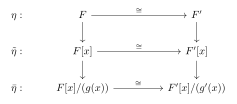
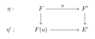
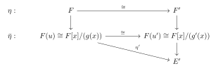
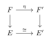
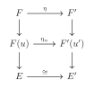
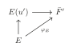
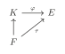
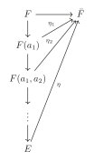

第 2 章：尺规作图与分裂域
§ 01尺规作图
在本节中我们讨论尺规作图问题。
记 \(L(x,y)\) 为过两点 \(x\) 和 \(y\) 的直线，\(C(x,r)\) 为以点 \(x\) 为圆心，长度 \(r\) 为半径的圆。
开始尺规作图之前，我们在平面上有 \(n\) 个点 \(z_1,z_2,\dots ,z_n\in \mathbb{R}^2\cong \mathbb{C}\)，其中 \(z_1=(0,0),z_2=(0,1)\)，即我们有了原点和单位长度。
令 \(S_1=\left\{z_1,\dots,z_n\right\}\)。我们在 \(S_i\) 上通过如下规则作出 \(S_{i+1}\)：
- 添加两直线的交点 \(L(x,y)\cap L(x^\prime,y^\prime)\)；
- 添加两圆的交点 \(C(x,\left|y-z\right|)\cap C(x^\prime,\left|y^\prime-z^\prime\right|)\)；
- 添加直线与圆的交点 \(L(x,y)\cap C(x^\prime,\left|y^\prime-z^\prime\right|)\)。
于是有 \(S_1\subset S_2 \subset \dots\) 并且 \(S=\displaystyle\bigcup_{i=1}^{\infty} S_i\) 是所有能用尺规作图作出来的点构成的集合。
显然 \(\frac{1}{2^n}\mathbb{Z}[i]\subset S\)，即 \(S\) 在 \(\mathbb{C}\) 中是稠密的。
定理 1.1
我们有如下命题：
- \(S\supset {z_1,\cdots,z_n}\) 是 \(\mathbb{C}\) 的子域；
- \(\forall a\in S\)，我们有 \(\bar{a}\in S\) 与 \(\sqrt{a}\in S\)；
- \(S\) 是 \(\mathbb{C}\) 的满足如上条件的最小子域。
证明
我们已经熟知如何用尺规作图对线段长度进行加减乘除与开根，以及对角进行加减与平分，故前两者是显然的。对于最后一个命题，设 \(F\) 是 \(C\) 的满足条件的子域，可以通过归纳验证 \(S_i\subset F\)。
定义 1.2
称 \(S\) 中的点是\(z_1,\dots,z_n\) 尺规导出的(constructible)
定义 1.3
对于 \(\mathbb{C}\) 的子域 \(F\)，一个域扩张 \(E/F\) 称为 \(F\) 上的平方根塔(square root tower)，若 \(E\) 形如 \(F(u_1,\dots,u_n)\) 并且 \(u_i^2\in F(u_1,\dots,u_{i-1})\)。
进而我们可以看到 \([F(u_1,\dots,u_i):F(u_1,\dots,u_{i-1})]=1\) 或 \(2\)，所以 \([E:F]=2^k\) 对于某个正整数 \(k\)。
定理 1.4
给定 \(n\) 个点 \(z_1,\dots,z_n\in \mathbb{C}\)，\(F=\mathbb{Q}(z_1,\dots,z_n,\bar{z_1},\dots,\bar{z_n})\)。则 \(z\in \mathbb{C}\) 是尺规导出的当且仅当 \(z\) 被包含在 \(F\) 上的一个平方根塔里。
证明
设 \(T\) 是平方根塔的集合。
一方面，容易验证 \(T\) 同 \(S\) 一样满足上述条件，故 \(S\subset T\)。
另一方面，通过归纳容易验证 \(T\) 中的点都是尺规导出的，故 \(T\subset S\)。
因此 \(S=T\)，得证。
推论 1.5
若 \(z\) 是尺规导出的，那么 \(z\) 是代数数，且若 \(g(x)\) 是 \(z\) 在 \(F\) 上的极小多项式，则 \(\deg g(x)=2^k\)，对于某个正整数 \(k\)。
例 1.6尺规作图三大问题
倍立方问题：取 \(F=Q,z=\sqrt[3]{2}\)，\(z\) 在 \(F\) 上的极小多项式是 \(g(x)=x^3-2\)，\(\deg g(x)=3\neq 2^k\)，故不是尺规导出的。
三等分角问题：取 \(F=Q,z=e^{i\pi/9}\)，\(z\) 在 \(F\) 上的极小多项式是 \(g(x)=x^3-\dfrac{3}{4}x-\dfrac{1}{8}\)，\(\deg g(x)=3\neq 2^k\)，故 \(\dfrac{\pi}{3}\) 不能被三等分，更不用说一般的角了。
倍立方问题：取 \(F=Q,z=\pi\)，\(z\) 在 \(F\) 上不是代数元，自然不是尺规导出的。
§ 02分裂域
定义 2.1
\(f\) 是 \(F\) 上的首一多项式，域扩张 \(E/F\) 满足：存在 \(r_1,\cdots,r_n \in E\)，\(f(x)=(x-r_1)\cdots(x-r_n)\) 且 \(E=F(r_1,\cdots,r_n)\)，则称 \(E\) 是 \(F\) 的分裂域(splitting field)。此时称 \(E\) 是多项式 \(f(x)\) 的分裂域。
引理 2.2
我们有如下命题：
- 若 \(E\) 是 \(f(x)\in F(x)\) 的分裂域，则 \([E:F]<\infty\)；
- 域扩张 \(E/K/F\)， \(E/F\) 是 \(f(x)\in F[x]\subset E[x]\) 的分裂域，则 \(E/K\) 是 \(f(x)\) 的分裂域。
定理 2.3
\(F[x]\) 中任一非零首一多项式均有分裂域。
证明
对 \(f\) 的度数归纳。假设 \(f\) 在 \(F\) 上不可分，则存在不可约多项式 \(g(x)\)，\(g(x)\mid f(x)\)，\(\mathrm{deg} g\ge 2\)。由 Kronecker's theorem，存在域扩张 \(K/F\) 使得 \(g(x)=(x-r_1)g'(x)\in K[x]\)，则 \(f(x)=(x-r_1)f'(x)\in K[x]\)。由归纳假设知 \(h(x)/K\) 有分裂域 \(E\)，则 \(E\) 是 \(f(x)/F\) 的分裂域。
接下来我们想要证明分裂域在同构意义下是唯一的。
引理 2.4
\(\eta:F\rightarrow F'\) 是域同构，则存在唯一的同构 \(\tilde{\eta}:F[x]\cong F'[x]\)。对不可约多项式 \(g[x]\in F[x],g'(x)=\tilde{\eta}(g(x))\in F'[x]\)，存在唯一的同构 \(\bar{\eta}:F[x]/(g(x))\cong F'[x]/(g'(x))\) 且下图是交换的。

引理 2.5
\(\eta:F\rightarrow F'\) 是同构，\(E/F,E'/F'\) 是域扩张，\(E/F\) 的代数元 \(u\) 的极小多项式为 \(g(x)\)，令 \(g'(x)=\eta(g(x))\)，则存在 \(\eta':F(u)\rightarrow E'\) 使得下图交换：

当且仅当 \(g'(x)\) 在 \(E'\) 中有根。这样的扩张的个数与 \(g'(x)\) 在 \(E'\) 中的根个数相同。
证明
“\(\Longrightarrow\)”：\(g(u)=0\)，故 \(g'(\eta'(u))=\eta(g(\eta'(u)))=0\)，即 \(\eta'(u)\) 是 \(g'(x)\) 在 \(E'\) 上的根。
“\(\Longleftarrow\)”：设 \(u'\) 是 \(g'(x)\) 的任一根，由引理 1.3知我们知道下图交换：

\(\tilde{\eta}\) 与 \(\eta'\) 有一一对应，故 \(\eta'\) 存在且唯一。对于 \(g'(x)\) 任一根对应的 \(\eta'\) 均不同，故这样的扩张的个数与 \(g'(x)\) 在 \(E'\) 中的根个数相同。
定理 2.6
\(\eta:F\rightarrow F'\) 是同构，\(f(x)\in F[x],f'(x)=\tilde{\eta}(f(x))\in F'[x]\)，\(E/F\) 和 \(E'/F'\) 分别是 \(f/F\) 与 \(f'/F'\) 的分裂域，则有同构 \(E\rightarrow E'\) 使得下图交换：

进一步，这样的扩张个数不超过 \([E:F]\)，取等当且仅当 \(f'(x)\) 在 \(E'\) 中没有重根。
证明
对 \([E:F]\) 归纳。设 \(u\in F\) 的极小多项式为 \(f(x)\) 的一个不可约因式 \(g(x)\)，\(\mathrm{deg}g\ge 2\)。由引理
考虑 \(E\) 和 \(E'\) 是 \(f(x)/F(u)\) 和 \(f'(x)/F'(u')\) 的分裂域。由归纳假设，对任意 \(\eta_u\) 存在至多 \([E:F(u)]\) 个扩张，取等当且仅当 \(f'(x)\in F'(u')[x]\) 在 \(E'\) 上无重根。故扩张的总数至多 \([F(u):F][E:F(u)]=[E:F]\) 取等当且仅当 \(f'\) 在 \(E'\) 上无重根。

推论 2.7
\(E/F\) 是 \(f(x)\in F[x]\) 的分裂域，则
取等当且仅当 \(f(x)\) 没有重根。
定理 1.7 的证明
存在性：考虑
设 \(I\) 是由 \(\left\{ f(x_f)\Big| f(x)\in F[x]\right\}\) 生成的理想。我们断言 \(I\neq R\)，故可以取极大理想 \(\mathfrak{m}\supseteq I\)。事实上，若 \(I=R\)，则存在 \(g_1,\cdots,g_n\in R,f_1,\cdots,f_n\in F[x]\) 使得
由 Kronecker's theorem，存在域扩张 \(K/F\) 使得 \(f_i(x)\) 在 \(K\) 中有根 \(a_i,i=1,\cdots,n\)，则我们取 \(x_{f_i}=a_i\) 就有 \(1=g_1\cdot f_1(a_1)+\cdots+g_n\cdot f_n(a_n)=0\)，矛盾！
令 \(E_1=R/\mathfrak{m}\) 是一个域，对 \(f(x)\in F[x],f(\overline{x_f})=0 \in E_1\)。故 \(E_1\) 是 \(F\) 的代数扩张，则任意 \(f\in F\) 均有一根在 \(E_1\) 中。
继续这个过程，我们得到了一列代数扩张：
令 \(E=\bigcup_{n=1}^\infty E_i\)，则 \(E/F\) 是代数扩张。对任意 \(f(x)\in E[x]\)，设 \(f(x)\in E_n[x]\)，则 \(f\) 在 \(E_{n+1}\subset E\) 中有根，即 \(E\) 是代数闭的，这表示 \(E\) 是 \(F\) 的一个代数闭包。
唯一性：设 \(\bar{F}/F,\bar{F}'/F\) 是 \(F\) 两个代数闭包。定义
首先 \((F,id_F)\in S\) 故 \(S\neq \emptyset\)。我们定义序关系 \((K,\varphi_K)\le (K',\varphi_{K'})\) 当且仅当 \(K\subset K'\) 且 \(\varphi_K=\varphi_{K'}|_K\)，这是一个偏序关系。对于升链 \((K_1,\varphi_{K_1})\le (K_2,\varphi_{K_2})\le \cdots\) 有上界 \((\cup K_i,\displaystyle\lim_{i\rightarrow \infty} \varphi_{K_i})\)。由 Zorn 引理，我们知道 \(S\) 中存在极大元 \((E,\varphi_E)\)。
若 \(E\neq \bar{F}\)，取 \(u\in \bar{F}\setminus E\)，我们有下图交换：

矛盾！故 \(E=\bar{F}\)，我们有单射 \(\varphi:\bar{F}\rightarrow \bar{F}'\)，同样有单射 \(\bar{F}'\rightarrow\bar{F}\)，这表示 \(\bar{F}\cong \bar{F}'\)。
推论 2.8
设 \(\tau:F\rightarrow E\)，\(E\) 是代数封闭的，\(K/F\) 是代数扩张，则存在 \(\varphi:K\rightarrow E\) 使得下图交换：

推论 2.9
\(E=F(a_1,\cdots,a_n)\) 是代数扩张，则 \(\left|\mathrm{Hom}_F(E,\bar{F})\right|\le [E:F]\)取等当且仅当所有 \(a_i\) 的极小多项式 \(g_i(x)\) 都没有重根。
证明
注意到
取等当且仅当 \(g_1(x)\) 无重根。固定 \(\eta_1\in \mathrm{Hom}_F(F(a_1),\bar{F})\)，同样有
故 \(\left|\mathrm{Hom}_{F}(F(a_1,a_2),\bar{F})\right|\le [F(a_1,a_2):F]\)。继续下去就完成了证明。

完
评论